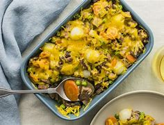

**************** EASTER CASSEROLE *************

Description
This Easter breakfast casserole with hash browns, bacon, and green bell pepper is looked forward to every holiday in our house. It is so delicious!
Ingredients
- cooking spray
1 pound bacon
- 8 large eggs
- 2 cups milk
- 3 cups shredded Cheddar cheese
- ¼ cup diced onion
- ¼ cup diced green bell pepper
- 1 (16 ounce) package frozen hash brown potatoes, thawed
Steps
- Preheat the oven to 350 degrees F (175 degrees C). Lightly grease a 7x11-inch casserole dish.
- Fry bacon in a large, deep skillet over medium-high heat until evenly browned, about 10 minutes. Drain on a paper towel-lined plate. Crumble.
- Beat together eggs and milk in a large bowl. Mix in cheese, bacon, onion, and green pepper. Stir in thawed hash browns. Pour mixture into prepared casserole.
- Cover with aluminum foil and bake in preheated oven for 45 minutes. Uncover and bake until eggs have set, another 30 minutes.